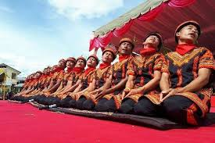
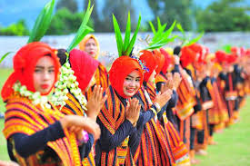
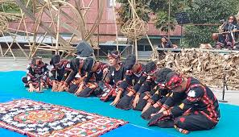

Profil Desa
Desa Padang merupakan salah satu desa yang berada di Kabupaten Gayo Lues, dan merupakan hasil pemekaran dari Desa Gegarang. Nama "Padang" berasal dari bahasa Aceh yang berarti luas, sesuai dengan kondisi geografis wilayahnya yang lapang.
Sedangkan nama “Gayo Lues” berasal dari bahasa Sanskerta: Gayo: Gunung Lues: Luas Nama ini mencerminkan wilayah yang dikelilingi oleh pegunungan luas.
Struktur Pemerintah Desa
- Kepala Desa: Amirudin
- Sekretaris: Tamrin
- Imam Kampung: Tgk. Ramli
- Kasi Pemerintahan: Sudirman
- Kasi Kesejahteraan:dan Pelayanan Tahmat
- Kaur Pembangunan: Sabna
- Kaur Keuangan: Ishak
🕺 Adat dan Seni Budaya

Tari Saman
Ditampilkan oleh laki-laki, tari cepat dan dinamis khas Gayo Lues.

Tari Bines
Biasanya dibawakan oleh perempuan, mencerminkan kelembutan dan kekompakan.

Tari Didong
Tari adat laki-laki untuk acara pernikahan, penuh makna dan pesan sosial.

Kenuri Ulu Nai
Tradisi 5 tahunan berupa pemotongan kerbau putih oleh masyarakat suku Alas, untuk memohon hasil panen melimpah. Ditandai dengan munculnya bendera putih di atas gunung.
Kontak Kami
Alamat: Desa Padang, Kec. Terangun, Kab. Gayo Lues
WhatsApp: 0851-3369-1417 (Wahidun) | 0822-7785-6024 (Zainudin)